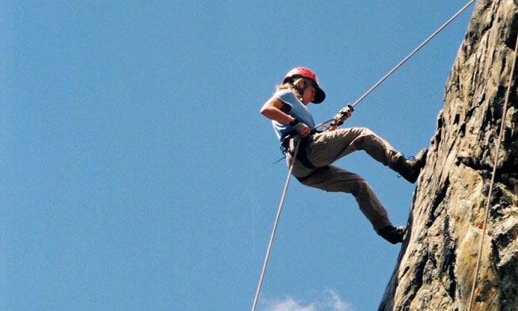
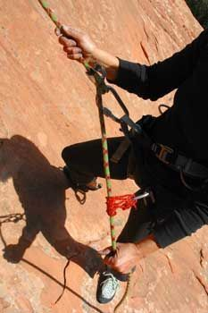
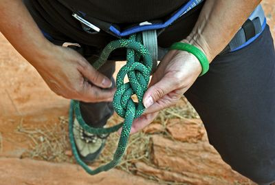
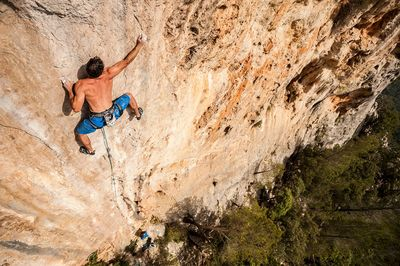

Rappelling is a means of using a rope to descend in a controlled manner. In other parts of the world, another term for rappelling is abseiling. While rappelling is a popular sport, it is also used by military, police and rescue services.
Mountain Climbing
Mountain rappelling is a popular recreational activity, particularly among rock climbers who need a way to safely descend a sheer cliff face.
Equipment
The three main pieces of equipment used in rappelling are rope, carabiners and harnesses. Additional equipment includes helmets, gloves, ascenders and descenders.
Knots
Knots are used in rappelling to secure the rope to anchor points along the way. Common knots used are figure eight knots, but the most important factor is to leave about a foot of rope at the end in case the knot slips.
Hazards
Rappelling can be a hazardous activity as there is risk of ropes jamming or breaking and equipment failure. It is important to have a belay, which involves a person holding the rope slack to help control the climber's descent at the first sign of trouble.
Watch this video, is amazing how they do this activity
What are 6 Essential Skills for Rappelling?
RAPPEL ANCHORS
You need at least two bomber anchors to rappel off a cliff, although three anchors are preferable with their added redundancy. Anchors can be bolts, cams, nuts, pitons, trees, or tied-off boulders. Rappel ropes are always threaded through metal anchor material carabiners, screw quick links, and steel descending rings rather than nylon slings, which can melt, break, and fail if they are in direct contact with a rope.
2. RAPPEL ROPES
When rappelling, you use either one or two climbing ropes, which are threaded through the metal anchor material like steel rings on the anchors at the top of the rappel. It is preferable to use a doubled single rope on short rappels so you don’t have to worry about knot failure or the rope getting jammed in the anchors when you pull it.
3. KNOTS FOR RAPPEL ROPES
Tie your two climbing ropes together with one of these four rappel rope knots. Tie stopper knots in the ends of each rappel rope strand so you don’t rappel off the end. Also, use an autoblock knot as a safety back-up.
4. RAPPEL DEVICE
It is best to thread the rappel ropes through a rappel device, like an ATC. In a pinch, you can use the old-style Dulfersitz body rappel, a Munter hitch, or a carabiner brake rig.
5. AUTOBLOCK KNOT
Use an autoblock knot or a Prusik knot as a safety back-up on the rappel ropes to let you stay in control, especially on long steep rappels
6. PULLING RAPPEL ROPES
Pulling down rappel ropes is not as easy as it sounds. Lots of problems can occur when you pull your ropes, including getting the knot jammed in a crack, the rope catching in cracks or behind flakes, or too much friction to easily pull the rope down. If any of these problems occur you’re going to have a whole new set of problems retrieving your ropes and they’re not going to be fun.
  I love this activity or this can be considered a extreme sport, every vacation my family and me chose the biggest pack that include hotel, bracelets to many parks and for do many activities like rappel, zipline, etc!
Here is another videos about rappel and zipline too, I hope you like it.
Name
Last Name
City
State
Address
Suggest us, what do you think and if you want to know more about it.